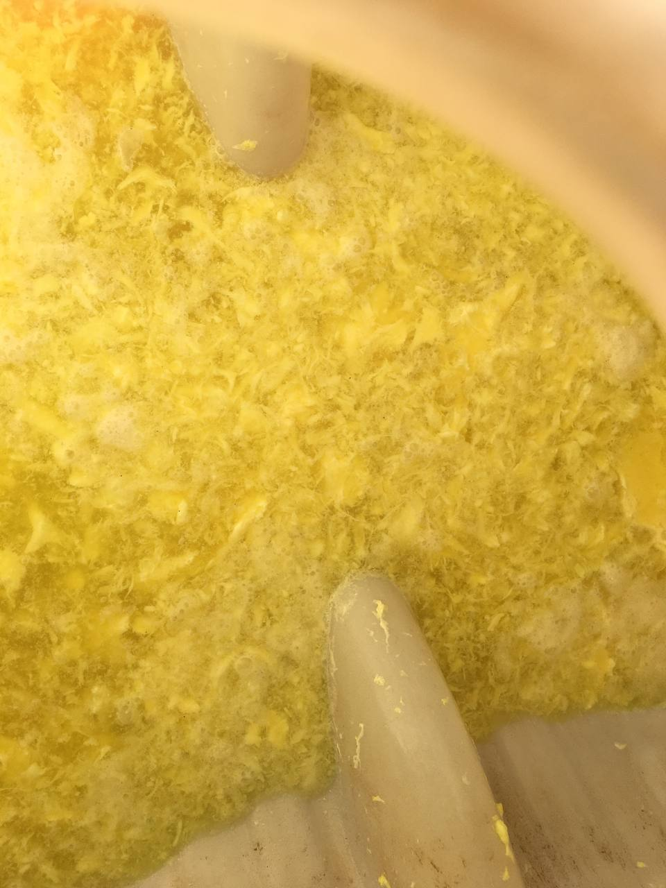
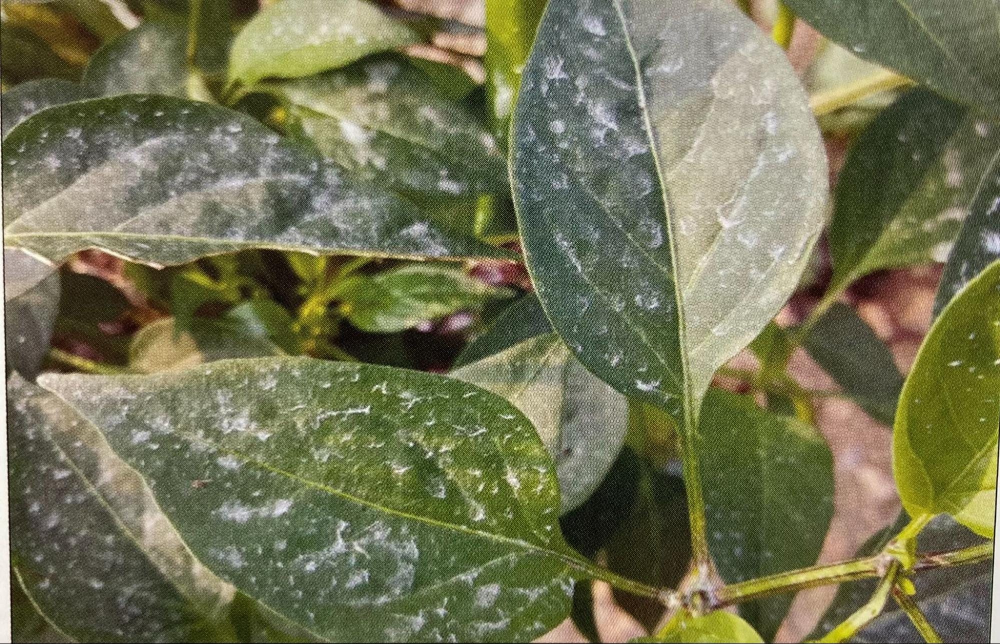
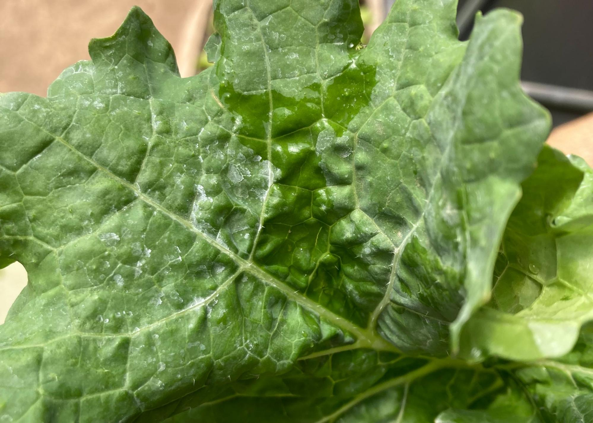
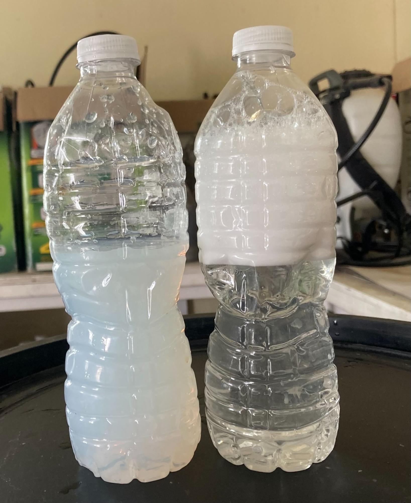

| 效自油 |
| 基本介绍 |
-
成分：效自油是由氢氧化钾、植物油（菜籽油或葵花籽油等）加软水制作而成
-
效自油被称为天然乳化剂，可提高农药的渗透和展着效果，是调制农药非常重要的物质。植物和昆虫的体表都有光滑的蜡层，药品很难在其上展着，调和效自油，会提高药品的使用效果。仅用效自油和水调和使用也能起到在病害初期防治蚜虫跟红蜘蛛的效果。
-
杀虫原理：效自油会在虫子身上形成一层膜，堵住害虫的气孔，使害虫窒息而死。
-
效自农药可与市面销售的环保农药和化学农药混合使用，但使用前必须进行浓度障碍测试。可用效自油代替机械油剂或化学农药展着剂。
-
效自油可反复喷洒且不会产生耐药性，不仅起到农药的作用，还能给作物提供营养，同时具有提高水果品质，起到催熟的效果。用软水勾兑，不但不会留下药痕，也不会伤害果子的花粉。
- 在大自然中，5天即可被分解，不会给土壤造成任何的污染。
-
效自油是效自天然农药的核心产品。没有效自油就无法调制任何的农药，效自油用量的加减也会决定农药的杀菌杀虫效果。
|
| 下菜时间 |
喷洒当天即可下菜，洗后即可食用 |
| 用药间隔： |
无明确要求，可连续喷洒。如果虫害严重，前一天晚上喷药，第二天早上也可以继续喷洒。
|
| 喷洒时间 |
- 最好在病症刚出现时开始使用
-
空气湿度较高时喷洒比较好。人们一般认为有露水时喷药，药品的浓度会被稀释，但天然农药在有露水的时候喷洒会提高杀虫杀菌的效果。天然农药的毒性比化学农药低很多，在干燥的晴天喷洒，喷在虫子体表的药品仅在1-2分钟内就蒸发掉了，杀虫效果明显降低，在湿度较高时或阴天喷洒，作物表面的农药不易蒸发，杀虫效果明显提高。
-
春季和秋季在清晨喷洒为宜，夏季宜在阴天或傍晚的时候喷洒。空气湿度大、水分不易蒸发时，白天喷洒也可以；塑料大棚在雨天也可以喷洒农药。
-
✳要想知道空气湿度，把握喷洒天然农药的最佳时间，可在作物表面喷水来确认状态。
|
| 保存时间 |
可长期保存，时间越久，效果越好。 |
| 配药方法 |

-
混合药品时，避免原液之间直接混合，直接兑入效自油和效自硫磺原液会产生不混的现象【如左图】，要把药品依次兑入水里进行混合。如，要配置五加仑的药水，可以先加入三加仑的水，再把效自油或者效自硫磺依次兑在水中，进行混合搅拌，然后再把剩下的两加仑的水加进去，再进行搅拌。另外，在低温期也会发生农药不宜混合的现象，要更多的搅拌。
-
⚠️尤其是果树打药，使用的效自硫磺和效自油浓度都比较大，所以前期混合药品的水一定得加够，别一次加一点点水，然后兑进去大量的效自油或者效自硫磺，这样原液跟原液还是会接触的，要按照要求，先兑入3/5左右的水，然后再混合药品，倒进去一种药品后，如果温度低溶解慢，可以先搅拌搅拌，再加进去另一样药品，这样会保险一些。
|
| 注意事项 |

-
必须使用软水混合效自油。效自油受水质影响非常大，如果使用含有钙锰铁的硬水时，效果就会减少或者失去效果，还会造成药痕，去除十分困难。
|

-
选择雾化效果好的喷头。雾化效果好，省药且药水覆盖更均匀，能有效提高杀虫杀菌效果。
|
- 一定要喷透，让药物均匀的喷洒在作物的各个角落。
- 如果喷洒果树，要注意提前修剪果树，否则不易喷洒均匀。
-
在与其他药品混用时，要提前混合药品测试，如果发生不混或者泡沫减少的现象，要避免使用
- 在全面喷洒前，一般要在局部进行浓度障碍测试
- 与化学药品进行混打或者交叉喷时，事先一定要测试浓度障碍
-
用多少兑多少，如果有剩下的就不要用了，尤其是混有效自硫磺的剩余药水，再喷的话会造成浓度障碍。
-
混合药草液时，要经过细致的过滤，除去渣子才能混合使用，否则容易出现药痕。
|
| 补充⚠️： |
如何判断水质软硬？
-
按照1:100的比例在水中加入效自油，摇匀后，水质清澈透明、并出现大量气泡，则为软水（如右图）。水质浑浊像牛奶一样，而且几乎不发生任何气泡，则为硬水（如左图）。
-
如何获取软水：雨水、雪水都是非常典型的软水。下雨半小时后开始接水，这时的水会比较干净。
|
| 配方和比例 |
效自油的用量范围为6-30ml／L，一般为 6-16ml/
L，随着效自油浓度增大，杀虫杀菌效果会增强，如果想要更强的杀菌杀虫效果。浓度可高于16ml／L，等病虫害稳定再回到6ml／L，病虫害严重时可增加到
20ml/L，但持续超过这个浓度，会造成作物生长萎缩，也会削弱果子的粉尘。
|
如果使用动力喷雾机打药，效自油浓度为30ml／L |
| 一、防治叶虱、蚜虫 |
1升水+10ml效自油+10ml洋姜水煮液 即
15升水+150ml效自油+150ml洋姜水煮液
- 商路和蕨菜可以代替洋姜；
- 洋姜叶有很好的杀虫效果，洋姜根的水煮液效果更好
-
虫害严重时，一升水可以兑20ml效自油、20ml药草液，隔一天打一次。
- 每升水添加1-2g 黄土粉末可以提高杀虫效果。
-
如果虫害很严重，可在第一次喷药后隔一小时再喷一次，或者在日落前喷一次，第二天清晨再喷一次。
|
| 二、防治烟夜蛾，夜蛾，刺蛾、蛀书虫、飞蛾、白粉虱、烟粉虱 |
1升水+16ml效自油+30ml洋姜水煮液 即
15升水+240ml效自油+450ml洋姜水煮液
- 商路和蕨菜可以代替洋姜；
-
虫害严重时可增加效自油和药草液的用量，隔一天打一次（2-3回）
- 添加效自硫磺可调和成广谱性综合杀菌剂
-
每升添加1-2g黄土粉末、2-3g氢氧化钠，可以提高农药的防虫效果，可同时防治蛞蝓和蜗牛，但给大棚作作物、葡萄、南瓜等打药容易引发浓度障碍，事先一定要进行浓度障碍测试，同时要防止药品溅到皮肤上，以免灼伤。
|
| 防治碧蛾蜡蝉、广翅蜡蝉、桑树虱、斑衣蜡蝉 |
1升水+20ml效自油+30ml银杏水煮液 即
15升水+300ml效自油+450ml银杏水煮液
- 可用蕨菜或者白头翁取代银杏
-
虫害严重时可增加效自油和药草液的用量，隔一天打一天（2-3回）
- 添加效自硫磺可调和成广谱性综合杀菌剂
-
可用作土壤杀虫剂，各个原材料减半使用即可，可对土壤进行喷洒或灌注。
- 每升水添加1-2g 黄土粉末可以提高杀虫效果。
|
|
四、防治椿象、叶瘙、斜纹夜蛾、蚊子、葱蝇、果蝇、木虱、桔子桑蓟马
|
1升水+20ml效自油+30ml 白头翁水煮液 即
15升水+300ml效自油+450ml白头翁水煮液
- 夹竹桃可以替代白头翁
-
这是效法自农药中药效最强的天然杀虫剂，用夹竹桃防治桑蓟马效果更为显著
- 可用作土壤杀虫剂，各个原料用量减半即可
- 添加效自硫磺可调和成广谱性综合杀菌剂
-
使用1升水兑20ml以上的效自油，连续喷洒时，会削弱果子果子的粉尘，或带来生长萎缩。
- 每升水添加1-2g 黄土粉末可以提高杀虫效果
|
| 五、防治蛞蝓、蜗牛、甲螨、羌螨 |
1升水+10ml效自油+3g氢氧化钠 即 15升水+150ml效自油+45g氢氧化钠
-
首先将氢氧化钠溶于水，搅拌，然后与农药混合
给大棚作作物、葡萄、南瓜等打药容易引发浓度障碍，事先一定要进行浓度障碍测试，同时要防溅，以免灼伤皮肤。
-
想达到同时防菌害的效果，可添加效自硫磺 每升水添加1-2g
黄土粉末可以提高杀虫效果
所有效自农药都可调和氢氧化钠，以此提高农药的效果
|
| 六：微生物农药（预防虫和菌） |
1升水+6ml效自油+40ml微生物培养液+20ml洋姜水煮液+20ml银杏水煮液 即
15升水+90效自油+600ml微生物培养液+300ml洋姜水煮液+300ml银杏水煮液
- 此配方可以防虫、防菌，可在病虫害发生前使用
- 微生物喷洒叶面可提高微生物的多样性，防止病原菌得势
-
如果已经发生病害，可用效自硫磺取代微生物，发生虫害时，用加量的药草液取代微生物
- 微生物培养液用量过大会降低农药的展着效果， 不建议加量使用
|
|
注：增加药草液的用量时，必须同时增加效自油的用量，才能提高防治效果，如果只增加药草液或者效自硫磺的用量，而不提高效自油的浓度，杀菌杀虫效果也会受影响。
|